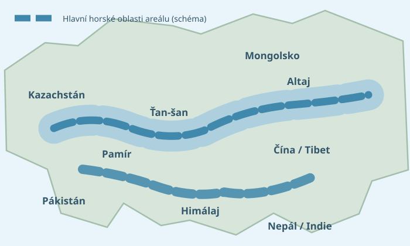

Levhart sněžný
(irbis)
Tichý lovec se skvrnitou srstí, dlouhým ocasem a domovem na skalnatých útesech. Proč ho chrání celý svět?
Proč si irbise připomínáme 23. října?
Mezinárodní den levharta sněžného podporuje ochranu těchto vzácných šelem, jejich horských domovů a spolupráci s místními obyvateli. Datum vychází z Biškekské deklarace přijaté 12 zeměmi dne 23. října 2013. Valné shromáždění OSN v roce 2024 oficiálně vyhlásilo 23. říjen Mezinárodním dnem levharta sněžného.
Ověření: OSN – International Day of the Snow Leopard ↗ · GSLEP – Biškekská deklarace ↗
Karta malého zoologa
Podrobnější údaje odpovídající úrovni informačních karet LV4.
Údaje o mláďatech a březosti se v literatuře mírně liší. Použity jsou zaokrouhlené intervaly z podkladů Snow Leopard Trust a WWF.
Kde levhart sněžný žije?
Žije v pohořích střední a jižní Asie, například v Himálaji, Pamíru, Ťan-šanu, Karákóramu a Altaji. Vyskytuje se v částech 12 zemí. Má rád strmé skály, kamenité svahy a chladnou, suchou horskou krajinu.
V Himálaji se často pohybuje ve výškách asi 3 000 až 5 400 metrů nad mořem. V severnějších oblastech může žít níže.
Mapka je schematická: ukazuje přibližné horské oblasti, nikoli skutečné geografické hranice nebo přesnou hustotu výskytu.
Podklady k výskytu: Snow Leopard Trust – Habitat ↗ a IUCN Red List ↗.

Co je na irbisovi zajímavé?
Aktivity
Najdeš tu dostupné omalovánky, příběhy a informační karty. Obtahovačky jsou označené „Ke kontrole“. Žádná položka nevede na chybějící soubor.
Ověřujeme dostupné materiály o irbisovi.
Důvěryhodné zdroje
- OSN – International Day of the Snow Leopard (datum, oficiální status, ochrana)
- GSLEP – Bishkek Declaration (historie dne)
- Snow Leopard Trust – Facts (způsob života a potrava)
- Snow Leopard Trust – Life cycle (rozmnožování a život)
- Snow Leopard Trust – 2026 research update (intervaly březosti)
- Snow Leopard Trust – Habitat (výskyt)
- WWF – Snow leopard facts (mláďata)
- IUCN Red List – Panthera uncia (rozšíření a ohrožení)